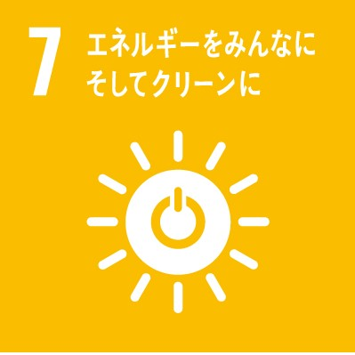
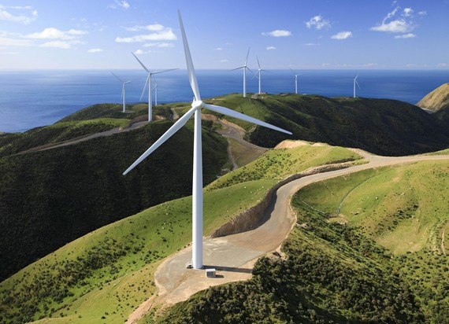
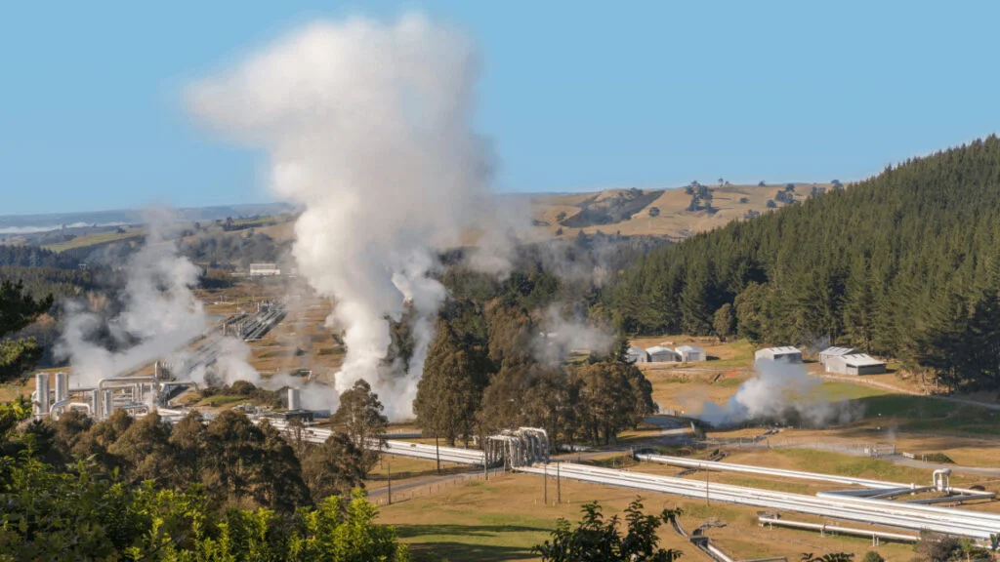

ニュージーランドは、主な二つの島と多くの小さな島々からなる国です。
イギリス連邦加盟国であり、英連邦王国の一国となっています。
首都はウェリントン
ニュージーランドは、ラグビーが盛んでニュージーランド代表は「オールブラックス」と呼ばれています。
ニュージーランドは南半球にあるため１～３月が夏で６～８月が冬になる、夏は最高気温が23.7度、冬でも最高気温が14.5度と日本と比べると比較的気温度差が小さくすごしやすい。
国土面積に占める農地の割合は42.1％で、さらに農地面積のうち91.8％が牧場・牧草地です。人口は約519万人。
ニュージーランドには、約2700万頭の羊がいてこれは人口約519万人よりも多く、羊の数が人口より多い国と言われています。
１８４０年、イギリスは先住民のマオリ人との間でワイタンギ条約を結びイギリス領に加わりました。
今でも、ニュージーランドの国旗にはユニオンジャックが見られます。
交通面では、羽田空港、成田国際空港、関西国際空港からオークランド国際空港への直行便が出ています。
ニュージーランドには、毒蛇や危険な生物がいません。
セッパリイルカ（Hector's Dolphin）や国鳥であるキーウィがいます。
ニュージーランドの総発電量における再生可能エネルギーの割合は80%を超えており、2025年には再エネによる発電を90%ににする目標を掲げています。
|  |  |  |